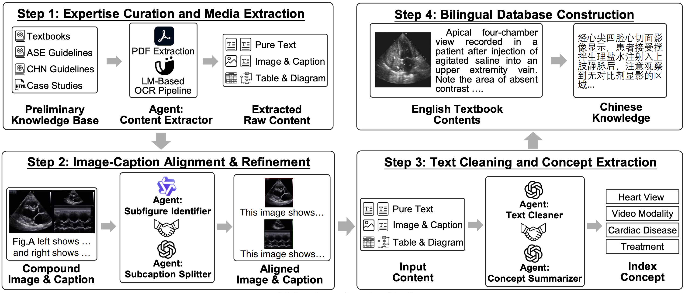
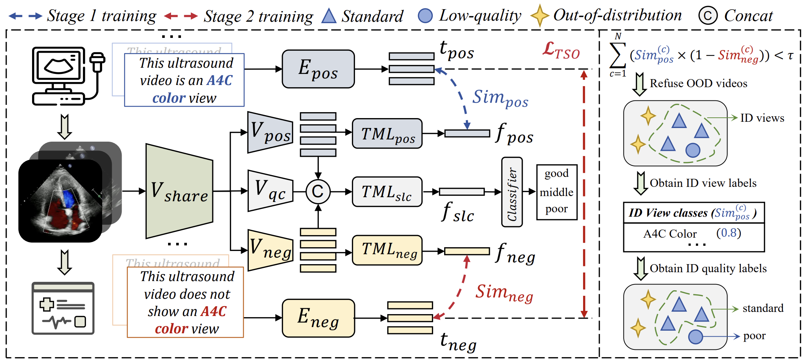
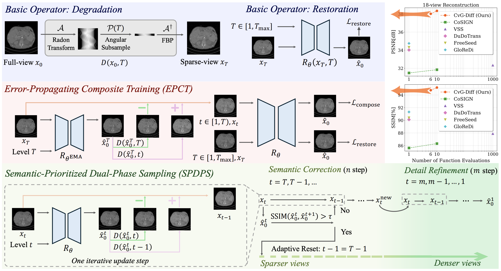
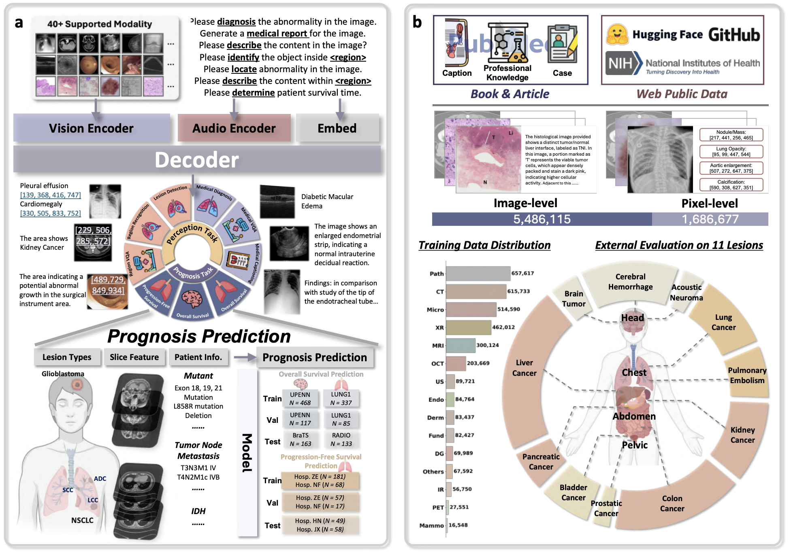
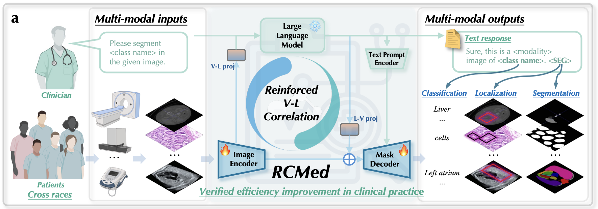
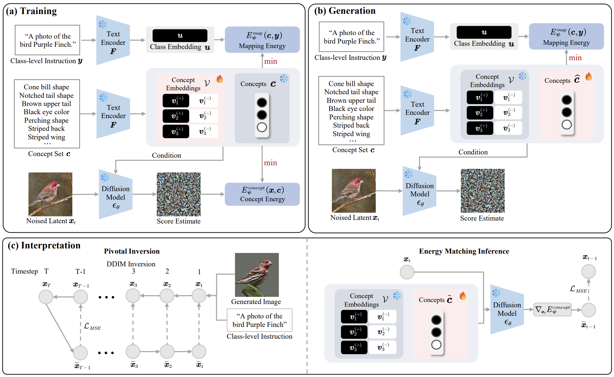
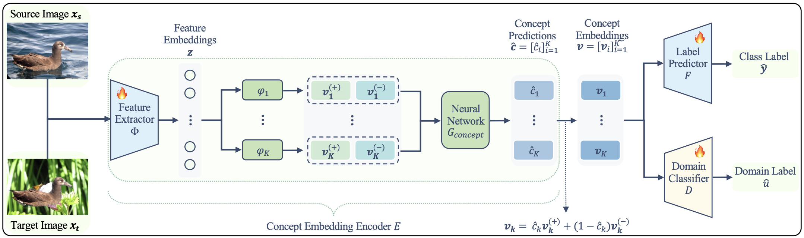

|
Yi Qin (Eason) I'm now currently a Ph.D. candidate supervised by Prof. Xiaomeng Li at ECE, the Hong Kong University of Science and Technology. I also had the opportunity to work with Prof. Hao Wang and Prof. Lu Mi. I am also collaborating with Guangdong Cardiovascular Institute and Prince of Wales Hospital on Echocardiography AI. Before joining HKUST, I obtained BEng at the South China University of Technology majoring in Automation Science and Engineering. |

|
ResearchMy research interests lie at the intersection of machine intelligence and digital healthcare, with a particular interest on echocardiography and cardiology. Specific interested topics include:
|
"*" indicates equal contribution, "_" indicates equal advising.

|
Energy-Based Concept Bottleneck Models: Unifying
Prediction, Concept Intervention, and Conditional
Interpretations
Xinyue Xu, Yi Qin, Lu Mi, Hao Wang, Xiaomeng Li ICLR, 2024 Codes We introduce Energy-Based Concept Bottleneck Models (ECBM) as a unified framework for concept-based prediction, concept correction, and fine-grained interpretations based on conditional probabilities. |

|
FSDiffReg: Feature-wise and Score-wise Diffusion-guided
Unsupervised Deformable Image Registration for Cardiac
Images
Yi Qin, Xiaomeng Li MICCAI, 2023 Project Page To fully exploit the diffusion model's ability to guide the registration task, we present two modules in FSDiffReg: Feature-wise Diffusion-Guided Module (FDG) and Score-wise Diffusion-Guided Module (SDG). |
|  |
Multi-Agent Collaboration for Integrating
Echocardiography Expertise in Multi-Modal Large Language
Models
Yi Qin, Dinusara Sasindu Gamage Nanayakkara, Xiaomeng Li MICCAI, 2025 Paper We propose Multi-Agent Collaborative Expertise Extractor, a multi-agent system that builds EchoCardiography Expertise Database, the richest cardiac knowledge base from diverse sources. We also introduce Echocardiography Expertise-enhanced Visual Instruction Tuning, a lightweight tuning method that efficiently injects this expertise into models by training less than 1% of parameters. |
|  |
EchoViewCLIP: Advancing Video Quality Control through
High-performance View Recognition of
Echocardiography
Shanshan Song, Yi Qin, Honglong Yang, Taoran Huang, Hongwen Fei, Xiaomeng Li MICCAI, 2025 Paper EchoViewCLIP addresses these issues using a large dataset with 38 standard views and OOD samples. It introduces a Temporal-informed Multi-Instance Learning (TML) module for capturing key frames and a Negation Semantic-Enhanced (NSE) detector for OOD rejection. A quality assessment branch boosts reliability. The model achieves 96.1% accuracy, advancing fine-grained view recognition and robust OOD handling in echocardiography. |
|  |
Cross-view Generalized Diffusion Model for Sparse-view
CT Reconstruction
Jixiang Chen, Yiqun Lin, Yi Qin, Hualiang Wang, Xiaomeng Li MICCAI, 2025 Code We introduce CvG-Diff, a fast, high-quality sparse-view CT reconstruction method that models artifacts deterministically and introduces two novel techniques—EPCT and SPDPS—to reduce errors and improve efficiency. |
|  |
Multi-Modal Explainable Medical AI Assistant for
Trustworthy Human-AI Collaboration
Honglong Yang, Shanshan Song, Yi Qin, Lehan Wang, Haonan Wang, Xinpeng Ding, Qixiang Zhang, Bodong Du, Xiaomeng Li Arxiv Paper We introduce XMedGPT, a multi-modal medical AI assistant that enhances clinical usability by combining accurate diagnostics with visual-text explainability and uncertainty quantification, enabling transparent and trustworthy decision-making. |
|  |
Reinforced Correlation Between Vision and Language for
Precise Medical AI Assistant
Haonan Wang, Jiaji Mao, Lehan Wang, Qixiang Zhang, Marawan Elbatel, Yi Qin, Huijun Hu, Baoxun Li, Wenhui Deng, Weifeng Qin, Hongrui Li, Jialin Liang, Jun Shen, Xiaomeng Li Arxiv, 2025 Paper We introduce RCMed, a full-stack medical AI assistant that enhances multimodal accuracy through hierarchical vision-language grounding and a self-reinforcing correlation loop. Trained on 20M samples, it excels in 165 clinical tasks across 9 modalities, achieving state-of-the-art performance and strong generalization in real-world cancer diagnosis and cell segmentation. |
|  |
Energy-Based Conceptual Diffusion Model
Yi Qin, Xinyue Xu, Hao Wang, Xiaomeng Li Neurips Safe Generative AI Workshop, 2024 Paper We propose Energy-Based Conceptual Diffusion Models (ECDMs), a framework that unifies the concept-based generation, conditional interpretation, concept debugging, intervention, and imputation under the joint energy-based formulation. |
|  |
Concept-Based Unsupervised Domain Adaptation
Xinyue Xu, Yueying Hu, Hui Tang, Yi Qin, Lu Mi, Hao Wang, Xiaomeng Li ICML, 2025 Paper CUDA improves the robustness of Concept Bottleneck Models under domain shifts by aligning concept representations with adversarial training, allowing flexible differences, and enabling concept inference without labels. It boosts interpretability and outperforms state-of-the-art CBM and domain adaptation methods. |
Projects and Patents |
Honors, Awards, and Services |
|
This website is adapted from Jonathan Barron's source code. |